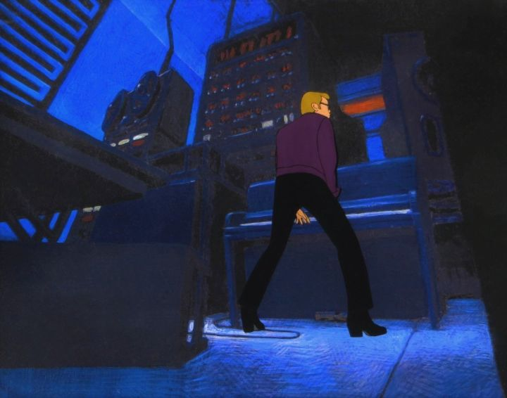

Underground animation legend Ralph Bakshi makes two types of movies. The first is the dirty, sex and drug and foul-language-fueled set, like "Fritz the Cat," "Heavy Traffic" or "Coonskin" (and maybe "Wizards"), meant to shock parents in the 70's but excite their teenagers. The other are attempts to make actual movies, like "The Lord of the Rings" and 'Fire and Ice," typically relying on motion-capture for more grounded animation. Across all of these, I never particularly liked Bakshi's writing and directing style, even though I respected him as an artist. But in 1981, he released "American Pop," as if it was a late answer to critics, to prove that he could, in fact, make a proper movie. And what a incredible movie it is! I tell people they can skip most of his work, but that they should see "Heavy Traffic," and this. "Heavy Traffic" might be his magnum opus, best representing what Bakshi is interested in. But "American Pop" is his true masterpiece, and sorely underrated. The movie could have easily been shot as live-action, but there's a certain magic in having it rotoscoped into 2D animation. The premise, from the opening scene onwards, is brilliant. It starts in the 19th century, where a immigrant family from Eastern Europe escapes persercution and arrives in New York City. Starting a new life, the child of the family discovers the entertainment industry, working his way up from the bottom with hopes to become a performer and musician himself. In any other movie, you'd expect this lead underdog character to face hardship, but ultimately succeed. Part of the brilliance in "American Pop" is that the main character fails, due to circumstance and the reality of life getting in the way. His dream might be unfullfilled, but he has a family, and his CHILD grows up with similar hopes of becoming a famous musician. He fails too. This continues over the course of a century of American history, ending with a fourth generation, where the resulting musician has decades of experience, confidence and dreams riding in his genes. He walks straight into a radio station and makes his own opportunity without hesitation. After a long journey full of failure, his arc is extremely satisfying. This works on so many levels. We're getting a lesson in history, from the perspective of hard-working immigrants as well as native-born Americans finding their purpose in life. We get the constant and ever-relatable struggle of fame and fortune and chasing your dreams. We get the individual life struggles in each time period, impressively fleshed out as their own stories. And the whole thing is connected through a single family tree, over many periods of time, for one grand epic. It's a perfect American story. And inspired by some real events and people, it almost feels like a bio-pic.Visually, Bakshi relies on rotoscoping, and because the story itself is already grounded, it feels appropriate. The production values aren't much better than they usually are in Bakshi's movies (budget always feels like an issue), but are still effective enough. I never fully appreciated Bakshi's choice of soundtracks, but here, the music is important, and it's good.I've always respected Bakshi as an artist, but had trouble enjoying almost any of his movies. It's a little frustrating to know that he was always capable of a film masterpiece like "American Pop," and that he simply chose to ignore this type of story in pursuit of his own style. Or maybe it was a happy accident, that he always had the pieces to make great film but struggled to put them together in the right way. Anyway, this is far and away my favourite film Bakshi's made, and the easiest to recommend to the widest audience.
- "Ani" More reviews can be found at : https://2danicritic.github.io/ Previous review: review_Amagi_Brilliant_Park Next review: review_An_American_Tail